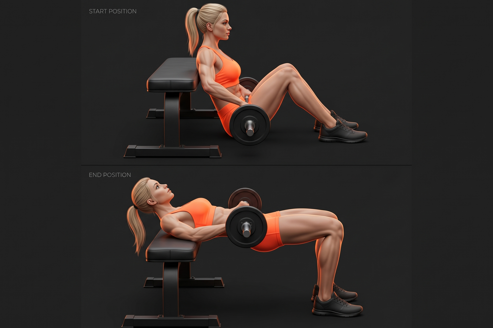
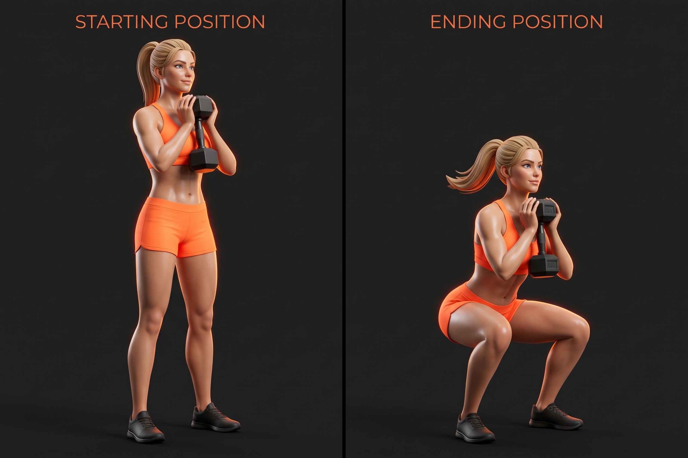
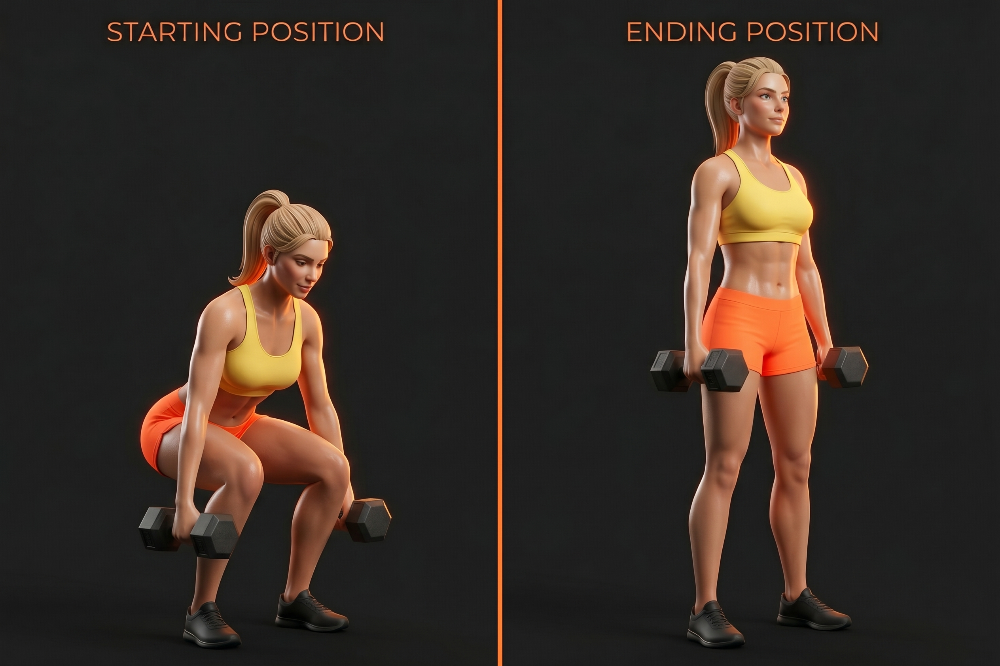
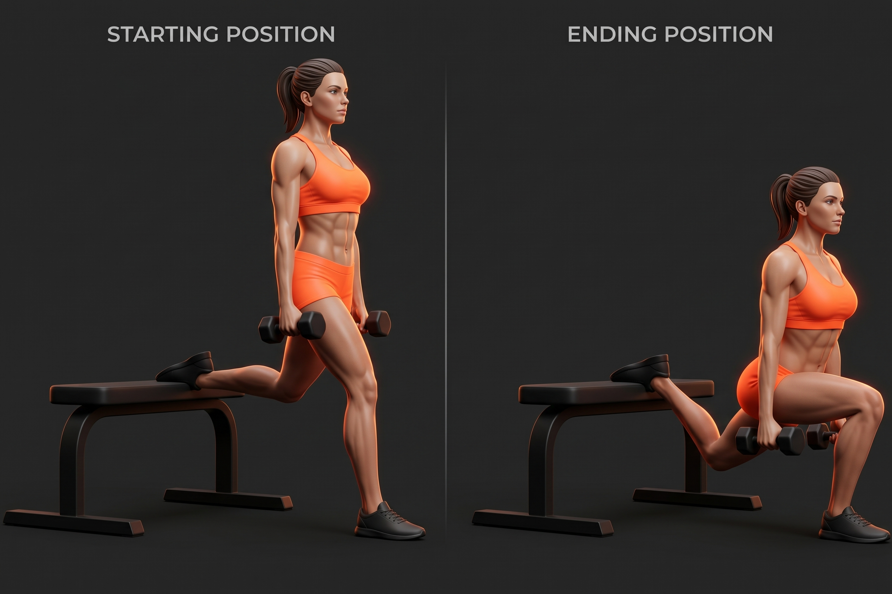
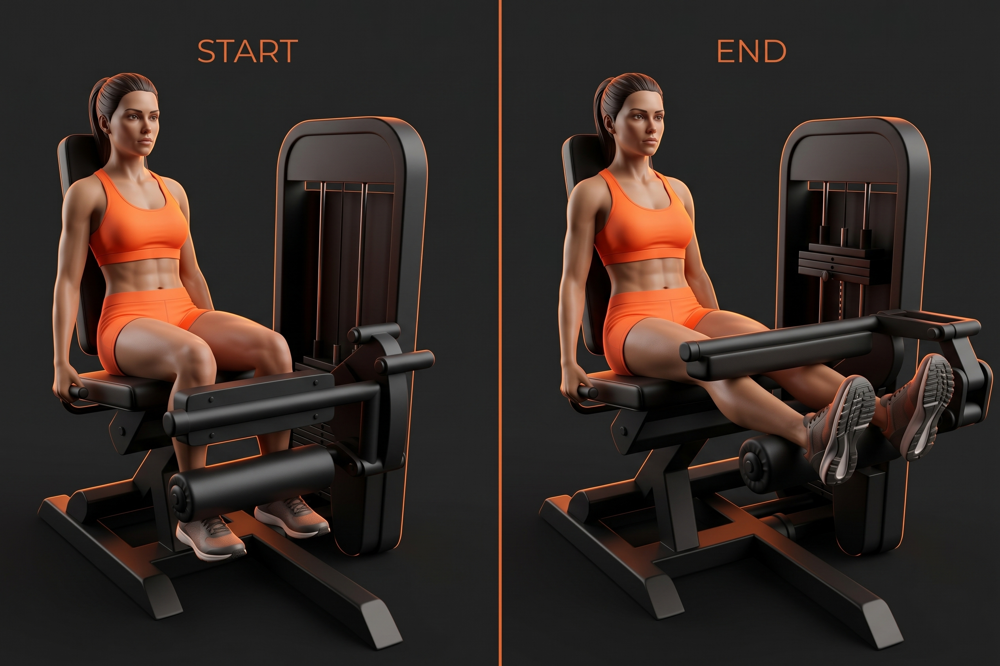
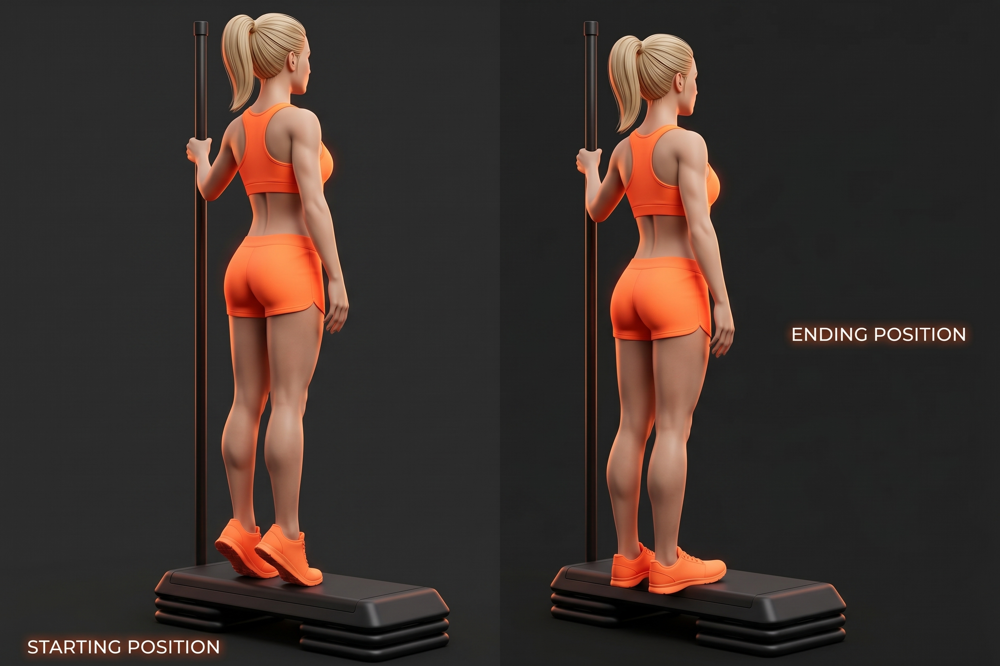

Duración: 45 min • Glúteos y Piernas
ELEVACIÓN DE RODILLAS
MARCHA ACTIVA
1 MINUTO X 1 SERIE
Movimiento: Eleva suavemente las rodillas alternando las piernas en el mismo sitio.
Para qué sirve: Eleva la temperatura corporal y lubrica las rodillas.
CÍRCULOS DE CADERA
MOVILIDAD COXOFEMORAL
1 MINUTO X 1 SERIE
Movimiento: Realiza círculos amplios con la cadera hacia ambos lados de manera controlada.
Para qué sirve: Mejora el rango de movimiento en la articulación de la cadera.
PUENTE DE GLÚTEOS
ACTIVACIÓN SIN PESO
1 MINUTO X 1 SERIE
Movimiento: Acostada boca arriba con rodillas flexionadas, eleva la cadera contrayendo los glúteos arriba.
Para qué sirve: Despierta los glúteos y prepara el sistema neuromuscular antes de cargar peso.
SENTADILLAS LIBRES
MECÁNICAS DE FLEXIÓN
1 MINUTO X 1 SERIE
Movimiento: Baja la cadera manteniendo la espalda neutra y el talón bien apoyado.
Para qué sirve: Prepara la flexión de rodilla y cadera para el bloque principal.
PATADAS TRASERAS
CONEXIÓN GLÚTEA
1 MINUTO X 1 SERIE
Movimiento: Extiende la pierna hacia atrás de forma controlada sin arquear la zona lumbar.
Para qué sirve: Conecta el sistema nervioso directamente con los músculos del glúteo.
DESPLANTES DINÁMICOS CORTOS
ESTIRAMIENTO ACTIVO
1 MINUTO X 1 SERIE
Movimiento: Da pasos cortos hacia atrás flexionando ambas rodillas suavemente.
Para qué sirve: Estira los flexores de la cadera y mejora el equilibrio dinámico.

BARBELL HIP THRUST
Puente de glúteos con barra
3 Series x 10-12 Reps
Movimiento: Apoya la espalda alta en un banco, coloca la barra sobre la cadera y empuja hacia arriba contrayendo fuerte los glúteos en la cima.
Para qué sirve: El ejercicio estelar para el desarrollo, volumen y firmeza de los glúteos.

GOBLET SQUAT
Sentadilla con mancuerna al pecho
3 Series x 10-12 Reps
Movimiento: Sostén una mancuerna verticalmente frente al pecho. Baja la cadera de forma profunda manteniendo el torso erguido.
Para qué sirve: Tonifica cuádriceps y glúteos protegiendo la columna gracias a la carga frontal.

ROMANIAN DEADLIFT
Peso muerto rumano con mancuernas
3 Series x 10-12 Reps
Movimiento: Con una ligera flexión de rodillas, empuja la cadera hacia atrás sintiendo el estiramiento en los femorales y sube apretando glúteos.
Para qué sirve: Modela la cadena posterior (femorales y glúteos) y mejora notablemente la postura.

BULGARIAN SPLIT SQUAT
Desplantes búlgaros
2 Series x 10 Reps por pierna
Movimiento: Coloca un empeine apoyado en el banco trasero y baja controladamente con la pierna delantera.
Para qué sirve: Trabajo unilateral profundo que elimina desequilibrios y esculpe el glúteo mayor y medio.

SEATED LEG CURL
Curl femoral sentado en máquina
2 Series x 12 Reps
Movimiento: Sentada en la máquina, flexiona las piernas hacia abajo y regresa de forma resistida.
Para qué sirve: Aísla por completo los músculos isquiotibiales (detrás del muslo).

STANDING CALF RAISE
Elevación de talones
2 Series x 15 Reps
Movimiento: Sube sobre la punta de tus pies buscando el punto máximo de contracción y baja estirando el talón.
Para qué sirve: Da definición, fuerza y soporte estético a las pantorrillas.
FIGURE-4 STRETCH
Estiramiento de glúteo en cruz
1 Minuto por pierna
Movimiento: Cruza un tobillo sobre la rodilla contraria y jala suavemente hacia tu pecho.
Para qué sirve: Libera la tensión profunda acumulada en los glúteos tras el entrenamiento.
HAMSTRING STRETCH
Estiramiento de femorales
1 Minuto por pierna
Movimiento: Extiende una pierna al frente y baja el torso con la espalda recta hacia la punta del pie.
Para qué sirve: Alarga la parte trasera de las piernas mejorando la flexibilidad rumbo a los splits.
PIGEON POSE
Postura de la paloma
1 Minuto por pierna
Movimiento: Dobla una pierna al frente en el suelo y estira la otra hacia atrás recostando el torso.
Para qué sirve: Apertura profunda de cadera y relajación de glúteos y flexores.
CHILD'S POSE
Postura del niño
1 Minuto total
Movimiento: Siéntate sobre tus talones y estira los brazos completamente al frente sobre el suelo.
Para qué sirve: Descomprime por completo la zona lumbar y relaja toda la columna.